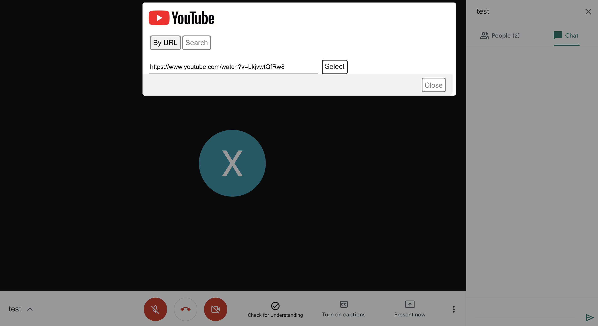
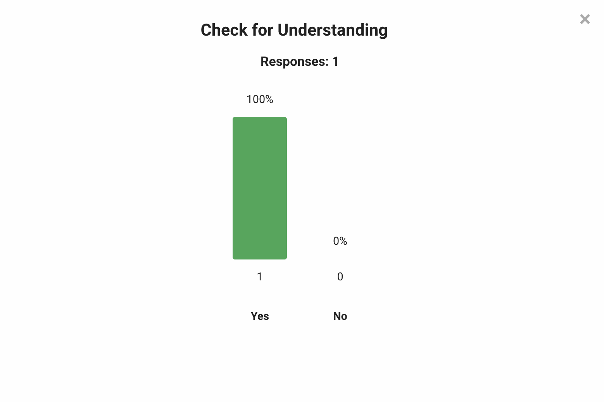

Studio 721 coordinates playback of YouTube videos simultaneously on all client machines. This permits the viewer to see the highest possible quality on their computer with no loss of audio.
In the remote learning environment many body language signals teachers use to gauge understanding are missing or hard to read. This tool allows the teacher to poll the student and the student can privately respond in a simple dialog. The teacher sees the results in an easy to read histogram making checks for understanding frictionless. No more asking, “does this make sense?” and only getting responses from the front row.
Teachers can poll students and check for understanding through predefined Google Forms or a simple automatically created one question form. Students see the question appear directly in Meet and teachers get the responses in a dialog. This provides a way to explicitly check for understanding, provide for student choice or even easily group students. Results are saved in the Google Form and can be reviewed later.
Everyone shares slides during videoconferences and, much like video, these slides can suffer from problems from being encoded as video and displayed to the viewer. Instead Studio 721 intends to display the Google Slides Presenter view to the presenter and the presentation view to each participant is opened directly in Meet, not from a video. In addition both the teacher and students have easy access from within Meet to the Google Slides Q&A tool.